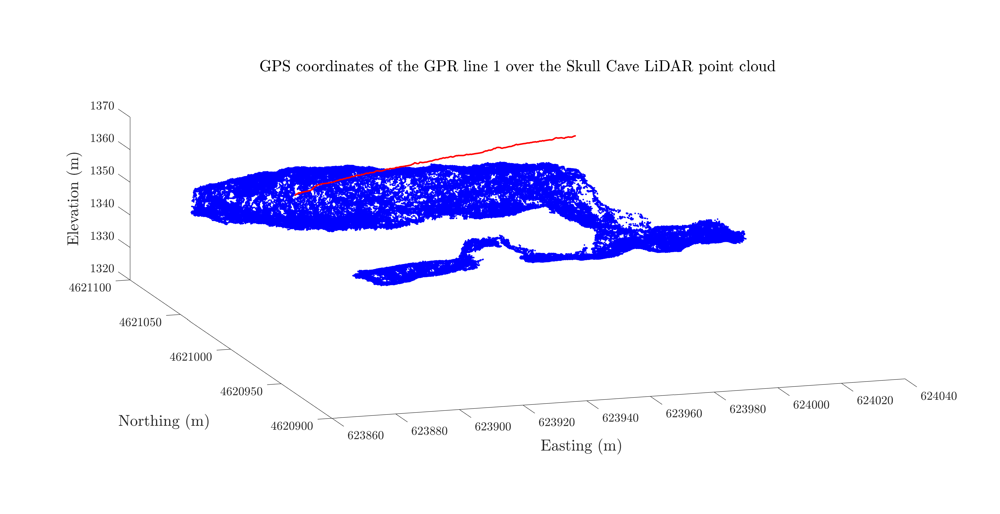
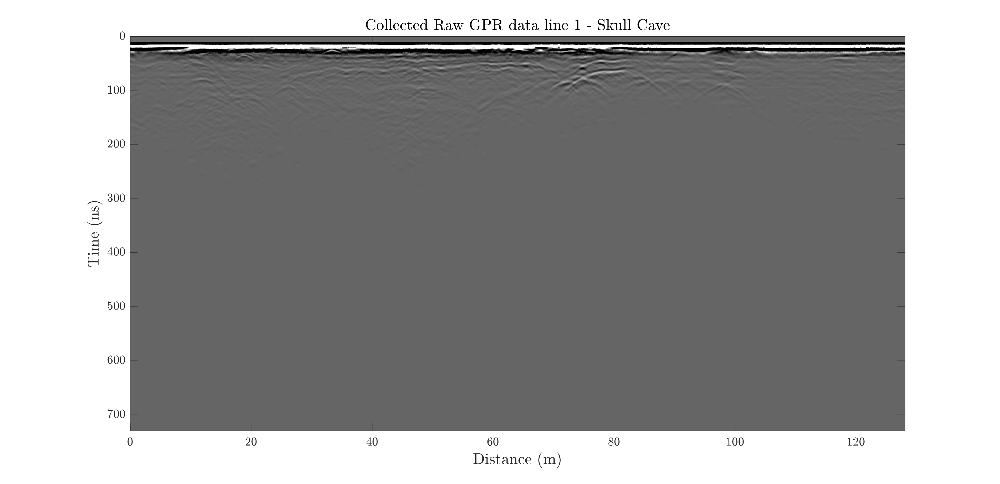
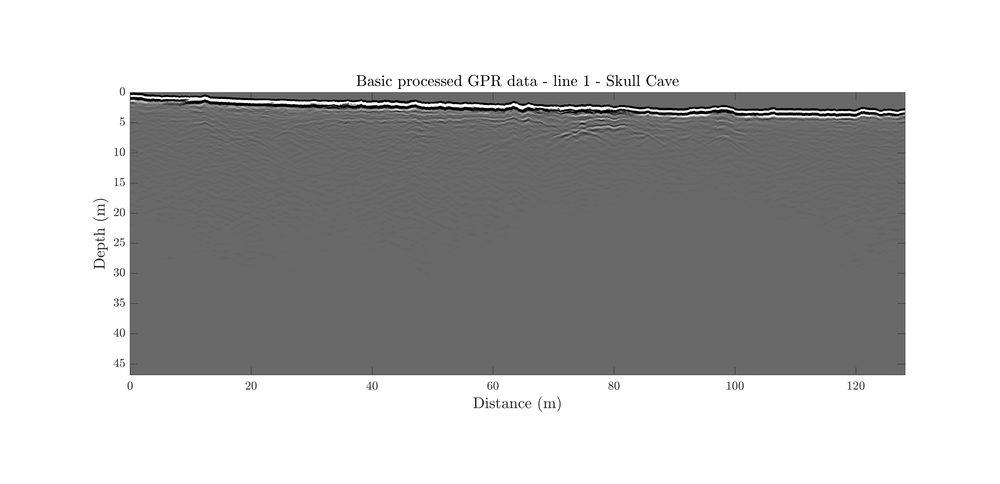
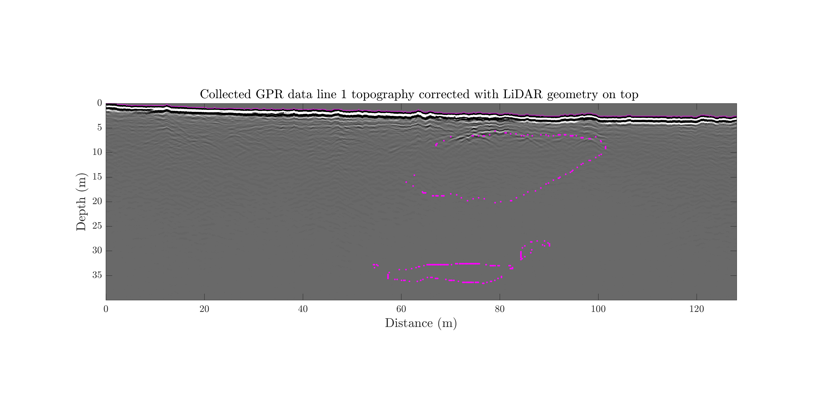
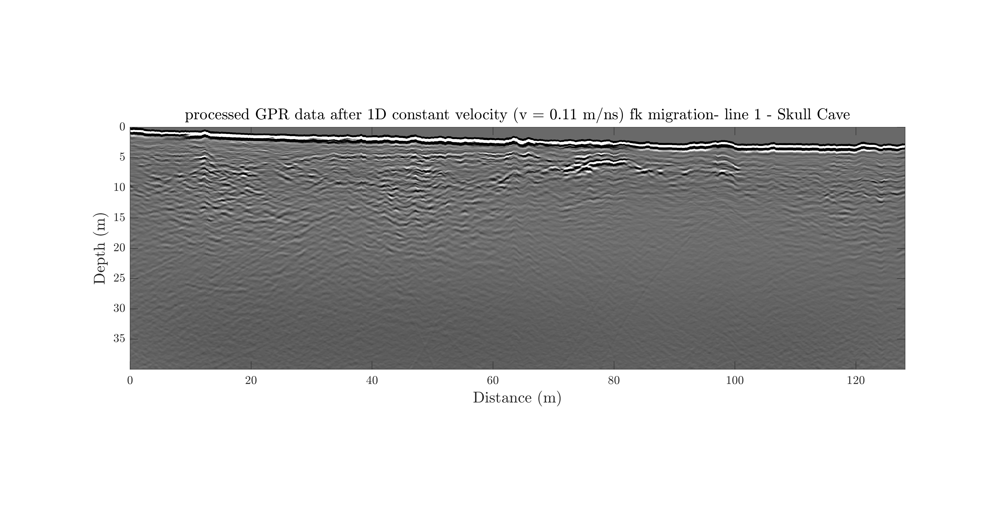
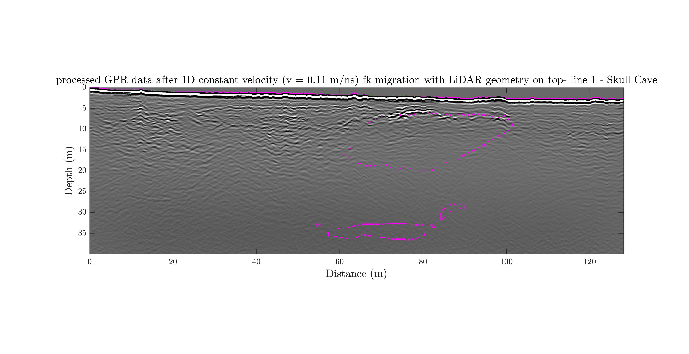
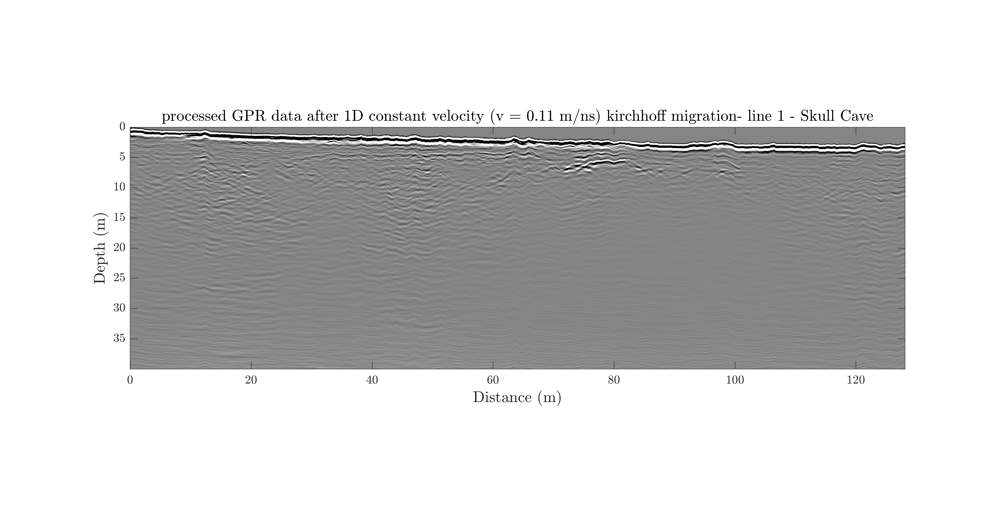
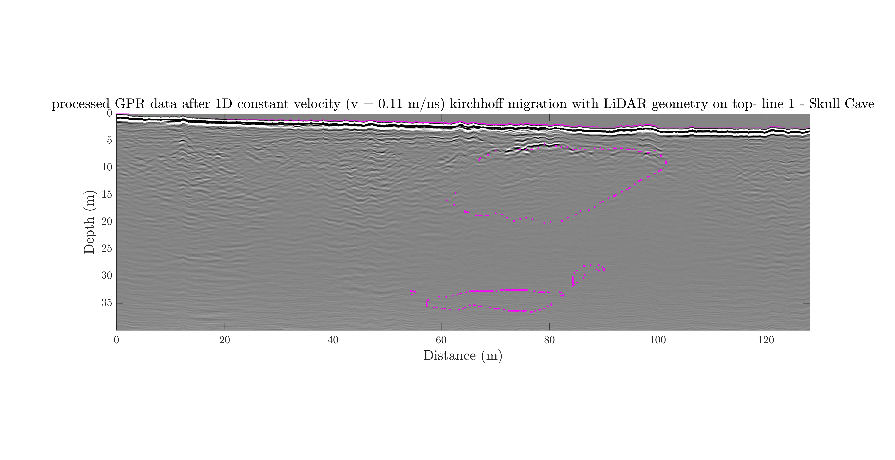

GPR line1 at the Skull Cave
link to download the raw data for the GPR line 1 and the corresponding GPS file.
link to the LiDAR data from Skull cave (TUBEX collected the data and supported the processing, and then GIFT and GEODES supported the archival.)
Data for the line 1 consists of ...
-
GPS coordinates of the gpr line 1 over the Skull lidar point cloud

-
Raw data

-
simple process after topo-correction

-
simple process after topo-correction with lidar geometry on top

-
fk migration with 1D constant velocity of 0.11 m/ns

-
fk migration with 1D constant velocity of 0.11 m/ns with lidar geometry on top

-
Kirchhoff migration with 1D constant velocity of 0.11 m/ns

-
Kirchhoff migration with 1D constant velocity of 0.11 m/ns with lidar geometry on top
